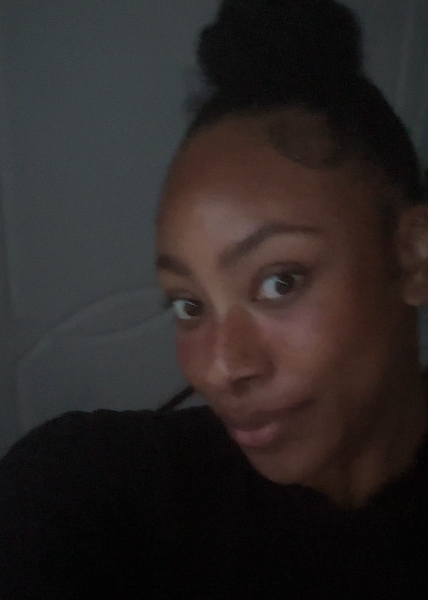

I am a transitioning Professional from being a Teaching Assistant to becoming a Web Developer through self-directed study.
Following my experience as a TA, I am actively seeking an apprenticeship in Software/Web Development, where I am able apply my structured problem solving skills in a professional, collaborative environment.
Where I am currently:
Right now, I have a solid understanding on how to build the structure of a webpage using HTML.
I have already built my Portfolio and an online resume, and started a personal project using the knowledge I gained.
I am currently learning how to use and apply CSS to my webpages and my next goal will be knowing how to use JavaScript.
I am keen to gain an insight into real world projects and learn from experienced developers.
I am also eager to contribute towards future development projects.
October 2026 - Present
I have GCSE's in:
Currently, I am actively seeking an apprenticeship where I can build upon the knowledge I have gained through self-study, develop my technical skills further, and learn from experienced developers.